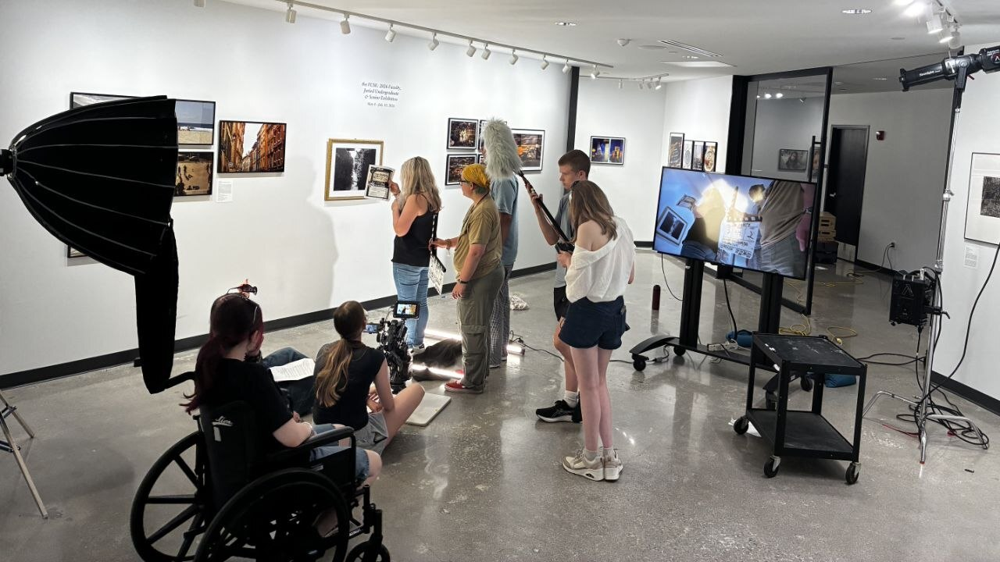
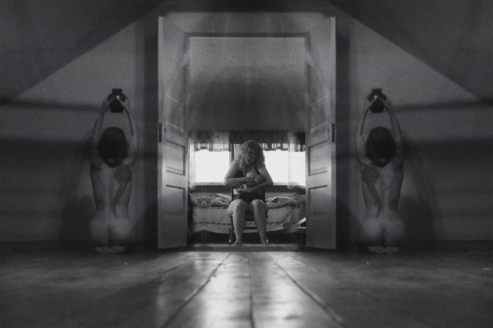

Selected work

Feature film · writer / director / editor · 2022. Available digitally on Amazon Prime Video, Tubi, and additional platforms.
Film page & streaming links · IMDb
More films
Relentless — feature in post-production.
The Haunted Belldown School — short film, 2026.
About
Trevor Juenger is an independent filmmaker and educator from rural Illinois. He discovered video through family camcorders and began making short films as a teenager. His work moves between horror, surrealism, fractured narrative, photography, and video installation.
He champions ultra-low-budget filmmaking for the creative freedom it gives artists working outside traditional financing. His features and shorts have screened internationally, received regional arts support, and earned festival recognition. Coyote screened at more than 30 festivals, while The Man in Room Six brought together collaborators and locations across Missouri, Kansas, Illinois, Indiana, and South Carolina over a three-year production.
Get in touch or read the CV.
Teaching

Trevor teaches film production at Southwestern Illinois College and Webster University, where he works across cinematography, editing, color, motion graphics, visual effects, film history, and emerging production technologies.
He is also SWIC Film’s equipment manager, overseeing more than 200 production assets and the program’s camera, lighting, software, and maintenance purchasing.
View curriculum vitae
Courses and areas of instruction
Webster University: Edit and Color; Advanced Edit and Color; Graphics and Effects; Pre-production Senior Overview; Core Production; Micro-budget Feature Filmmaking; Adobe Premiere Certification; AI Advancements in Video Production; Advanced Editing; Color Grading by the Numbers; Professional Development; Horror Film Production; 360-degree Imaging.
Southwestern Illinois College: Film Appreciation; Film History; Movie Making I and II; Advanced Post-production; Video Graphics; Advanced Graphics and Animation; Cinematography; Advanced Cinematography; Chroma Key.
Software and systems: DaVinci Resolve, Adobe Premiere, After Effects, Photoshop, Character Animator, Final Cut Pro X, SpeedGrade, Mocha, Final Draft, and Blackmagic, Canon, DJI, Sony, RED, and Panasonic camera systems.
Gallery Work

Photographic and moving-image work has appeared in exhibitions including Prints of Darkness, Tales by Light, Memento Mori, and Webster University faculty exhibitions at Kooyumjian Gallery.
Recent recognition includes an Award of Excellence for Memento Mori and a 2023 juried appearance at the St. Louis Artists’ Guild.
Press & appearances
Interviews, podcasts, and conversations about independent filmmaking:
Presentations
- “Indie Guerrilla Filmmaking in the Digital Age,” National Student Electronic Media Convention, 2019.
- Speaker, St. Louis Area Filmmaker Conference, Middle West Movies, 2019.
Contact
For screenings, teaching, collaborations, or production work:
trevorjuenger@gmail.com
618-954-0628
 CoyoteFeature · 2014 · Watch & press
CoyoteFeature · 2014 · Watch & press
 Live or DieFeature · 2005 · Watch on Vimeo
Live or DieFeature · 2005 · Watch on Vimeo